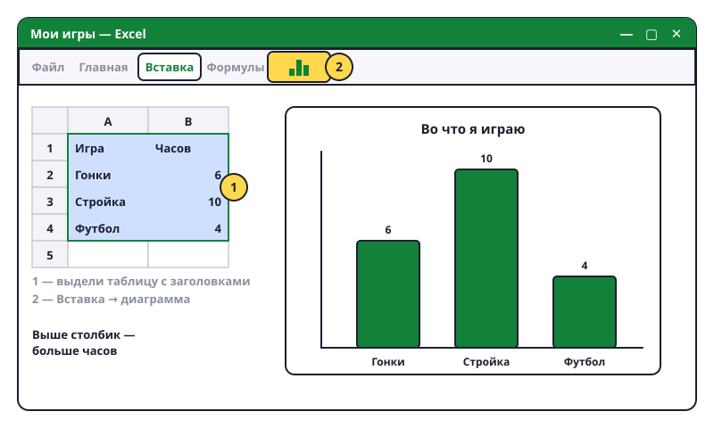

Рисуем диаграмму
Диаграмма — это картинка из чисел. По ней сразу видно, что больше, а что меньше, без всяких расчётов.

Шаги
- Открой таблицу «Мои игры» (названия в столбце A, часы в столбце B).
- Выдели данные вместе с заголовками: кликни A1, держи кнопку и тяни до последней ячейки с числом в столбце B.
- Вкладка «Вставка» → группа «Диаграммы». Нажми на столбчатую (гистограмма, значок со столбиками) → выбери первую.
- Готово! Диаграмма появилась на листе. Чем выше столбик — тем больше часов.
- Подвинуть: тяни за край диаграммы. Изменить размер: тяни за угол.
- Название: кликни на надпись «Название диаграммы» вверху и напиши своё.
- Другой вид: кликни на диаграмму → вкладка «Конструктор» → «Изменить тип диаграммы». Попробуй круговую — она показывает доли, как разрезанный пирог.
- Поменяй число в таблице — диаграмма перерисуется сама.
Какую выбрать
- Столбики — сравнить несколько штук: кто больше.
- Круг (пирог) — доли от целого: какая часть недели на что уходит.
- Линия (график) — как что-то менялось со временем: температура по дням, рост по годам.
Попробуй сам: построй столбчатую диаграмму по «Моим играм». Назови её «Во что я играю». Потом сделай из неё круговую. Какая понятнее?
Диаграмма получилась пустая или странная? Скорее всего, выделил не то. Удали её (кликни и Delete), выдели заново от заголовка до последнего числа.